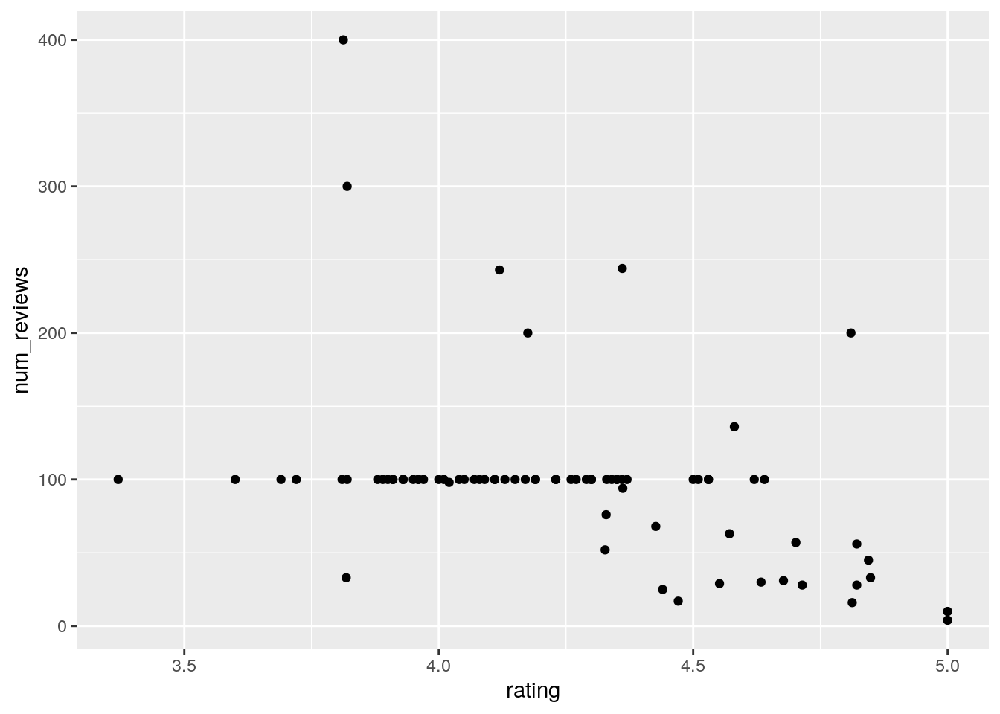
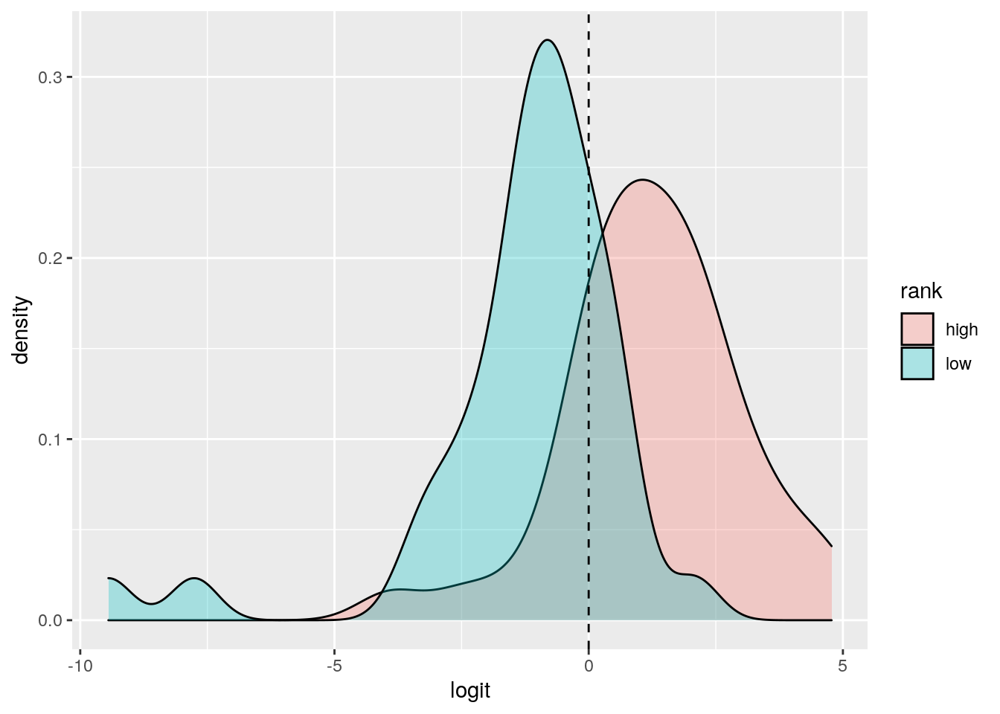
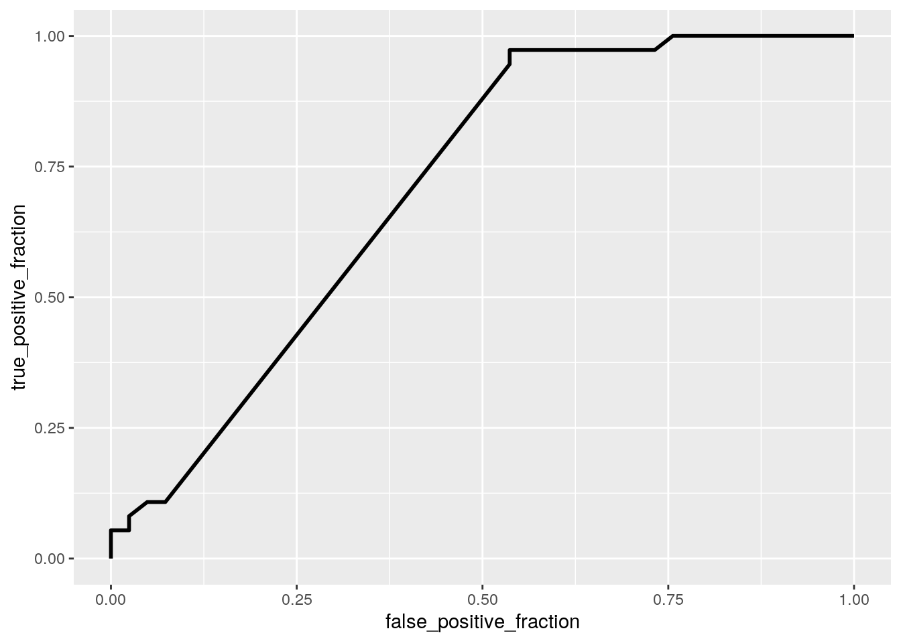
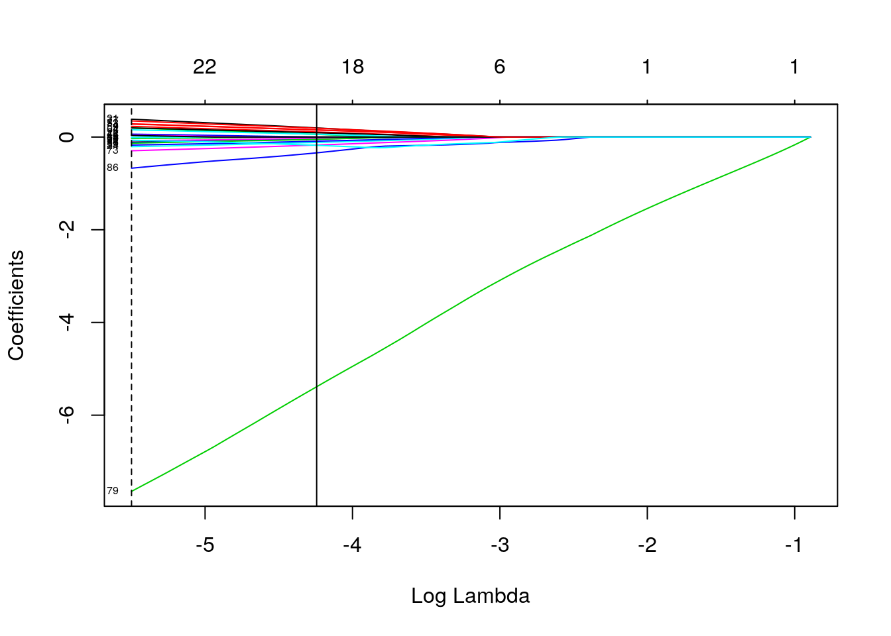

January 1, 0001
Data on Austin Coffee Shops
Introduction
I found data that reports on the yelp ratings of all of the coffee shops in Austin. The data accounts for the name of the shop, the number of total yelp reviews it has, its overall rating (out of 5 stars), and things that may have factored into its rating such as the quality of the coffee, the price, and the location, to name a few. These considerations are shown as proportions to how important it is to the overall rating. In the first section of code I also added in a column that will later be used as my binary variable. I made it so that coffee shops with a rating less than 4.2 stars would be considered a “low” rank, while the coffee shops that had a rating of 4.2 or greater were considered “high” ranking. I also took out a column called “vibe”, which was one of the factors, because it seems like a very subjective variable and it had a lot of NAs. There is a total of 78 observations and 16 variables.
library(tidyverse)
coffee_data <- read_csv("Coffee Data.csv")
coffee_data %>% head()## # A tibble: 6 x 16
## coffee_shop_name num_reviews rating coffee tea vibe internet food
## <chr> <dbl> <dbl> <dbl> <dbl> <dbl> <dbl> <dbl>
## 1 Third Coast Cof… 56 4.82 0.75 0 0.161 0 0.0357
## 2 My Sweet Austin 31 4.68 0 0 NA 0 1.06
## 3 Mary's Cafe 100 4.36 0.31 0 0.23 0 0.86
## 4 Anderson's Coff… 100 4.62 0.63 0.13 0.12 0 0
## 5 Irie Bean Coffe… 100 4.3 0.56 0.06 0.43 0.03 0.15
## 6 Friends & Neigh… 29 4.55 0.379 0 0 0 0.310
## # … with 8 more variables: alcohol <dbl>, seating <dbl>, service <dbl>,
## # parking <dbl>, location <dbl>, local <dbl>, price <dbl>, hours <dbl>coffee_data <- coffee_data %>% mutate(rank = ifelse(rating <
4.2, "low", "high")) %>% select(-vibe)
coffee_data <- coffee_data %>% mutate()1: MANOVA, ANOVA, and T-Tests
# MANOVA test
man1 <- manova(cbind(num_reviews, rating) ~ rank, data = coffee_data)
summary(man1)## Df Pillai approx F num Df den Df Pr(>F)
## rank 1 0.67119 76.549 2 75 < 2.2e-16 ***
## Residuals 76
## ---
## Signif. codes: 0 '***' 0.001 '**' 0.01 '*' 0.05 '.' 0.1 ' ' 1# Univariate ANOVA test
summary.aov(man1)## Response num_reviews :
## Df Sum Sq Mean Sq F value Pr(>F)
## rank 1 29799 29798.9 9.2322 0.003259 **
## Residuals 76 245305 3227.7
## ---
## Signif. codes: 0 '***' 0.001 '**' 0.01 '*' 0.05 '.' 0.1 ' ' 1
##
## Response rating :
## Df Sum Sq Mean Sq F value Pr(>F)
## rank 1 6.2470 6.2470 155.14 < 2.2e-16 ***
## Residuals 76 3.0603 0.0403
## ---
## Signif. codes: 0 '***' 0.001 '**' 0.01 '*' 0.05 '.' 0.1 ' ' 1coffee_data %>% group_by(rank) %>% summarize(mean(rating), mean(num_reviews))## # A tibble: 2 x 3
## rank `mean(rating)` `mean(num_reviews)`
## <chr> <dbl> <dbl>
## 1 high 4.52 79.1
## 2 low 3.96 118.# Post-hoc t-test
pairwise.t.test(coffee_data$num_reviews, coffee_data$rank, p.adj = "none")##
## Pairwise comparisons using t tests with pooled SD
##
## data: coffee_data$num_reviews and coffee_data$rank
##
## high
## low 0.0033
##
## P value adjustment method: nonepairwise.t.test(coffee_data$rating, coffee_data$rank, p.adj = "none")##
## Pairwise comparisons using t tests with pooled SD
##
## data: coffee_data$rating and coffee_data$rank
##
## high
## low <2e-16
##
## P value adjustment method: none1 - 0.95^5## [1] 0.2262191(1 - 0.95^5)/5## [1] 0.04524381I ran one MANOVA test, 2 univariate ANOVA tests, and 2 t-tests, for a total of 5 tests. The probability of getting a type I error is about 0.05, so a bonferroni correction will adjust the p-values accordingly. After adjusting, the significance level was 0.045. Even still, all of the p-values were significant, and these were the results:
A one-way MANOVA was conducted to determine the effect of rank (high or low) on two dependent variables (number of ratings and overall rating). Significant differences were found among the two rankings for at least one of the dependent variables– Pillai trace= .671 pseudo, F= 76.549, p < 0.0001.
Univariate ANOVAs for each dependent variable were conducted as follow-up tests to the MANOVA, using the Bonferroni method for controlling Type I error rates for multiple comparisons. The univariate ANOVAs for number of reviews and overall rating were also significant, F= 9.232 and p= 0.0033, and F= 155.14, p < 0.0001, respectively. Post hoc analysis was performed conducting pairwise comparisons to determine which rank differed in number of reviews and rating. Both rankings were found to differ significantly from each other in terms of number of reviews and rating after adjusting for multiple comparisons (bonferroni α=.0.226/5=0.045).
Some assumptions that may have not been met are homogeneity and no multicollinearity. I would actually imagine that multicollinearity definitely was not met since I created my categorical variable (rank) from a numberic variable in the dataset (rating).
2: Running a Correlation Test
coffee_data %>% summarize(cor(rating, num_reviews, use = "pair"))## # A tibble: 1 x 1
## `cor(rating, num_reviews, use = "pair")`
## <dbl>
## 1 -0.401cor.test(coffee_data$rating, coffee_data$num_reviews)##
## Pearson's product-moment correlation
##
## data: coffee_data$rating and coffee_data$num_reviews
## t = -3.821, df = 76, p-value = 0.0002699
## alternative hypothesis: true correlation is not equal to 0
## 95 percent confidence interval:
## -0.5727916 -0.1964462
## sample estimates:
## cor
## -0.4014284coffee_data %>% ggplot(aes(rating, num_reviews)) + geom_point() H0: the number of reviews has no effect on the overall rating of a coffee shop.
H1: the number of reviews does have an effect on the overall rating of a coffee shop.
A correlation test was performed to determine whether or not number of reviews affects the Yelp rating received for a coffee shop. The results showed a correlation of -0.4 and a p-value of 0.00027, which means that we can reject the null hypothesis and say that the number of reviews does have an effect on the overall rating of a coffee shop. Based on the correlation and the plot, we can see that the more reviews a coffee shop has, the lower its rating will be and vice versa. This makes sense because the more reviews there are, the more ratings there are being factored into the coffee shop’s overall rating.
3: Linear Regression
library(tidyverse)
library(lmtest)
library(sandwich)
# Centering the data
mean_rating <- coffee_data$rating - mean(coffee_data$rating,
na.rm = T)
mean_coffee <- coffee_data$coffee - mean(coffee_data$coffee,
na.rm = T)
mean_food <- coffee_data$food - mean(coffee_data$food, na.rm = T)
# Multiple Regression
multi_lm <- lm(mean_rating ~ mean_coffee + mean_food, data = coffee_data)
summary(multi_lm)##
## Call:
## lm(formula = mean_rating ~ mean_coffee + mean_food, data = coffee_data)
##
## Residuals:
## Min 1Q Median 3Q Max
## -0.82312 -0.26758 -0.00904 0.21788 0.84217
##
## Coefficients:
## Estimate Std. Error t value Pr(>|t|)
## (Intercept) 1.468e-16 3.961e-02 0.000 1.000
## mean_coffee 1.945e-01 1.919e-01 1.013 0.314
## mean_food 6.207e-02 1.664e-01 0.373 0.710
##
## Residual standard error: 0.3498 on 75 degrees of freedom
## Multiple R-squared: 0.0139, Adjusted R-squared: -0.0124
## F-statistic: 0.5286 on 2 and 75 DF, p-value: 0.5916# Plots of the regressions
multi_lm %>% ggplot(aes(mean_rating, mean_coffee)) + geom_point() +
geom_smooth(method = "lm")
# Recomputing with robust SEs
coeftest(multi_lm, vcov = vcovHC(multi_lm))##
## t test of coefficients:
##
## Estimate Std. Error t value Pr(>|t|)
## (Intercept) 1.4679e-16 4.0889e-02 0.0000 1.0000
## mean_coffee 1.9446e-01 2.6091e-01 0.7453 0.4584
## mean_food 6.2067e-02 2.1463e-01 0.2892 0.7732I ran a multiple regression test showing the interaction of rating on coffee scores and food scores. When looking at them together, the results show that the mean rating when the coffee and food scores are 0 is also 0. However, there is a difference when looking at the coffee and food estimates. Together, for every 1 star increase in rating, there is a 0.195 increase in coffee rating (out of 1), and a 0.062 increase in food rating (out of 1). The adjusted R squared shows that 0% of variability in our outcomes are explained.
4: Linear Regression + Bootstrapping
# Multiple Regression
multi_lm <- lm(mean_rating ~ mean_coffee + mean_food, data = coffee_data)
summary(multi_lm)##
## Call:
## lm(formula = mean_rating ~ mean_coffee + mean_food, data = coffee_data)
##
## Residuals:
## Min 1Q Median 3Q Max
## -0.82312 -0.26758 -0.00904 0.21788 0.84217
##
## Coefficients:
## Estimate Std. Error t value Pr(>|t|)
## (Intercept) 1.468e-16 3.961e-02 0.000 1.000
## mean_coffee 1.945e-01 1.919e-01 1.013 0.314
## mean_food 6.207e-02 1.664e-01 0.373 0.710
##
## Residual standard error: 0.3498 on 75 degrees of freedom
## Multiple R-squared: 0.0139, Adjusted R-squared: -0.0124
## F-statistic: 0.5286 on 2 and 75 DF, p-value: 0.5916# bootstrapping
multi_lm <- lm(mean_rating ~ mean_coffee + mean_food, data = coffee_data)
resids <- multi_lm$residuals
fitted <- multi_lm$fitted.values
resid_resamp <- replicate(5000, {
new_resids <- sample(resids, replace = TRUE)
coffee_data$new_y <- fitted + new_resids
multi_lm <- lm(new_y ~ mean_coffee + mean_food, data = coffee_data)
coef(multi_lm)
})
resid_resamp %>% t %>% as.data.frame %>% summarize_all(sd)## (Intercept) mean_coffee mean_food
## 1 0.0385773 0.1889046 0.1626882When comparing the robust SEs to the bootstrapped SEs, there is a slight difference. The bootstrapped SEs have a standard error of 0.039 (vs 0.041) for the intercept, 0.190 for mean_coffee (vs 0.261), and 0.164 for mean_food (vs 0.215).
5: Logistic Regression
data <- coffee_data %>% mutate(y = ifelse(rank == "high", 1,
0))
head(data)## # A tibble: 6 x 17
## coffee_shop_name num_reviews rating coffee tea internet food alcohol
## <chr> <dbl> <dbl> <dbl> <dbl> <dbl> <dbl> <dbl>
## 1 Third Coast Cof… 56 4.82 0.75 0 0 0.0357 0.0357
## 2 My Sweet Austin 31 4.68 0 0 0 1.06 0
## 3 Mary's Cafe 100 4.36 0.31 0 0 0.86 0
## 4 Anderson's Coff… 100 4.62 0.63 0.13 0 0 0
## 5 Irie Bean Coffe… 100 4.3 0.56 0.06 0.03 0.15 0.14
## 6 Friends & Neigh… 29 4.55 0.379 0 0 0.310 0.103
## # … with 9 more variables: seating <dbl>, service <dbl>, parking <dbl>,
## # location <dbl>, local <dbl>, price <dbl>, hours <dbl>, rank <chr>, y <dbl>logreg <- glm(y ~ num_reviews + service, data = data, family = binomial(link = "logit"))
coeftest(logreg)##
## z test of coefficients:
##
## Estimate Std. Error z value Pr(>|z|)
## (Intercept) -0.5822973 0.9661739 -0.6027 0.5467191
## num_reviews -0.0297626 0.0097735 -3.0452 0.0023250 **
## service 10.9573298 2.8212533 3.8839 0.0001028 ***
## ---
## Signif. codes: 0 '***' 0.001 '**' 0.01 '*' 0.05 '.' 0.1 ' ' 1exp(coef(logreg))## (Intercept) num_reviews service
## 5.586136e-01 9.706759e-01 5.737304e+04prob <- predict(logreg, type = "response")
predicted <- ifelse(prob > 0.5, "high", "low")
# Confusion matrix
table(truth = coffee_data$rank, prediction = predicted) %>% addmargins## prediction
## truth high low Sum
## high 34 7 41
## low 9 28 37
## Sum 43 35 78# Accuracy
(34 + 28)/78## [1] 0.7948718# sensitivity
34/41## [1] 0.8292683# specificity
28/37## [1] 0.7567568# precision
34/43## [1] 0.7906977# density plot
coffee_data$logit <- predict(logreg)
ggplot(coffee_data, aes(logit, fill = rank)) + geom_density(alpha = 0.3) +
geom_vline(xintercept = 0, lty = 2)
# roc curve
library(plotROC)
ROCplot <- ggplot(coffee_data) + geom_roc(aes(d = rank, m = num_reviews),
n.cuts = 0)
ROCplot
calc_auc(ROCplot)## PANEL group AUC
## 1 1 -1 0.7083059I made a logistic regression model to predict rank from number of ratings and the coffee shop’s service score (out of 1). The p-values were significant for the number of reviews and for the service. For a shop with 0 reviews and a service rating of zero, the odds that the rank will be high is 0.559. for every increase in the number of reviews, the odds that the rank= high goes up by a factor of 0.971. And for every increase in service rating, the odds that the rank is high goes up by a factor of 5737.04. This is a bit excessive because the service rating does not go higher than 1, but that’s still a pretty significant increase.
The confusion matrix shows that the accuracy is at 79.487%, the sensitivity is at 82.927%, the specificity is at 75.676%, and the precision is at 79.07%. An ROC curve was made, and the AOC was 0.708. This means the area under the curve is about 70.8% of the graph, which means the ROC curve is just okay (the max AOC is 1 and the min is 0.5). This makes sense because there is a moderate amount of overlap in the density plot.
6: Logistic Regression Pt. 2
data <- coffee_data %>% mutate(y = ifelse(rank == "high", 1,
0))
data$rank <- NULL
fit <- glm(y ~ rating + coffee + tea + internet + food + alcohol +
seating + parking + location + local + price + hours, data = data,
family = "binomial")
prob1 <- predict(fit, type = "response")
predicted1 <- ifelse(prob1 > 0.5, "high", "low")
class_diag(predicted1, data$y)## acc sens spec ppv auc
## 1 0.525641 1 0 0.525641 0library(pROC)
auc(data$y, prob1)## Area under the curve: 1# repeated random sub-sampling CV
fraction <- 0.5
train_n <- floor(fraction * nrow(data))
iter <- 500
diags <- NULL
for (i in 1:iter) {
train_index <- sample(1:nrow(data), size = train_n)
train <- data[train_index, ]
test <- data[-train_index, ]
truth <- test$y
fit1 <- glm(y ~ (.)^2, data = data, family = "binomial")
probs <- predict(fit1, newdata = test, type = "response")
predicted <- ifelse(probs > 0.5, "high", "low")
diags <- rbind(diags, class_diag(predicted, truth))
}
summarize_all(diags, mean)## acc sens spec ppv auc
## 1 0.5206154 1 0 0.5206154 0# LASSO
model.matrix(rank ~ ., data = coffee_data)[, -1]## coffee_shop_nameAnderson's Coffee Company
## 1 0
## coffee_shop_nameApanas Coffee & Beer
## 1 0
## coffee_shop_nameArturo's Underground Cafe coffee_shop_nameBennu Coffee
## 1 0 0
## coffee_shop_nameBrian's Brew coffee_shop_nameCafe Crème
## 1 0 0
## coffee_shop_nameCafe Java coffee_shop_nameCafe Ruckus
## 1 0 0
## coffee_shop_nameCaffe Medici coffee_shop_nameCenote
## 1 0 0
## coffee_shop_nameCherrywood Coffeehouse coffee_shop_nameCorona Coffee
## 1 0 0
## coffee_shop_nameCream Whiskers coffee_shop_nameCuvee Coffee Bar
## 1 0 0
## coffee_shop_nameDolce Neve coffee_shop_nameDominican Joe
## 1 0 0
## coffee_shop_nameElixer Coffee coffee_shop_nameEmerald Tavern Games & Cafe
## 1 0 0
## coffee_shop_nameEpoch Coffee
## 1 0
## coffee_shop_nameFat Cats Organic Coffee And Dessert
## 1 0
## coffee_shop_nameFigure 8 Coffee Purveyors coffee_shop_nameFlat Track Coffee
## 1 0 0
## coffee_shop_nameFleet Coffee coffee_shop_nameFlightpath Coffeehouse
## 1 0 0
## coffee_shop_nameFlitch Coffee coffee_shop_nameFriends & Neighbors
## 1 0 0
## coffee_shop_nameGenuine Joe coffee_shop_nameHalcyon
## 1 0 0
## coffee_shop_nameHoly Grounds coffee_shop_nameHot Mama's Cafe
## 1 0 0
## coffee_shop_nameHoundstooth Coffee coffee_shop_nameIrie Bean Coffee Bar
## 1 0 0
## coffee_shop_nameJo's Coffee coffee_shop_nameJuan Pelota
## 1 0 0
## coffee_shop_nameKick Butt Coffee Music & Booze
## 1 0
## coffee_shop_nameKowabunga Coffee coffee_shop_nameLa Patisserie
## 1 0 0
## coffee_shop_nameLa Tazza Fresca coffee_shop_nameLegend Coffee
## 1 0 0
## coffee_shop_nameLive Oak Market
## 1 0
## coffee_shop_nameLola Savannah Coffee Downtown
## 1 0
## coffee_shop_nameLola Savannah Coffee Lounge coffee_shop_nameLucky Lab Coffee
## 1 0 0
## coffee_shop_nameMañana Coffee & Juice coffee_shop_nameMary's Cafe
## 1 0 0
## coffee_shop_nameMonkey Nest Coffee coffee_shop_nameMozart's Coffee Roasters
## 1 0 0
## coffee_shop_nameMy Sweet Austin coffee_shop_nameOnce Over Coffee Bar
## 1 0 0
## coffee_shop_namePacha coffee_shop_namePatika coffee_shop_namePicnik Austin
## 1 0 0 0
## coffee_shop_nameQuack's 43rd Street Bakery
## 1 0
## coffee_shop_nameRadio Coffee & Beer coffee_shop_nameRussell's Bakery
## 1 0 0
## coffee_shop_nameSa-Ten coffee_shop_nameSeventh Flag Coffee Co
## 1 0 0
## coffee_shop_nameSister Coffee coffee_shop_nameSorrento's Coffee
## 1 0 0
## coffee_shop_nameStinson's coffee_shop_nameStrange Brew, Austin Coffee
## 1 0 0
## coffee_shop_nameSummer Moon Coffee Bar coffee_shop_nameSummermoon Coffee Bar
## 1 0 0
## coffee_shop_nameTea Haus coffee_shop_nameTeo coffee_shop_nameThe Buzz Mill
## 1 0 0 0
## coffee_shop_nameThe Factory - Cafe With a Soul
## 1 0
## coffee_shop_nameThe Hideout Coffeehouse
## 1 0
## coffee_shop_nameThe Marvelous Vintage Tea Party Co.
## 1 0
## coffee_shop_nameThe Steeping Room
## 1 0
## coffee_shop_nameThird Coast Coffee Roasting Company
## 1 1
## coffee_shop_nameThunderbird Coffee coffee_shop_nameTOMS
## 1 0 0
## coffee_shop_nameTrianon Coffee coffee_shop_nameTuscany At 360
## 1 0 0
## coffee_shop_nameVenezia Italian Gelato coffee_shop_nameVintage Heart Coffee
## 1 0 0
## num_reviews rating coffee tea internet food
## 1 56 4.821429 0.7500000 0.000000000 0.00000000 0.03571429
## alcohol seating service parking location local
## 1 0.03571429 0.00000000 0.21428571 0.053571429 0.03571429 0.071428571
## price hours logit
## 1 0.17857143 0.03571429 0.09899628
## [ reached getOption("max.print") -- omitted 77 rows ]library(glmnet)
y <- as.matrix(coffee_data$rank) #grab response
x <- model.matrix(rank ~ ., data = coffee_data)[, -1] #grab predictors
x <- scale(x)
cv <- cv.glmnet(x, y, family = "binomial")
lasso <- glmnet(x, y, family = "binomial", lambda = cv$lambda.1se)
coef(lasso)## 93 x 1 sparse Matrix of class "dgCMatrix"
## s0
## (Intercept) -0.70365563
## coffee_shop_nameAnderson's Coffee Company .
## coffee_shop_nameApanas Coffee & Beer .
## coffee_shop_nameArturo's Underground Cafe -0.04234099
## coffee_shop_nameBennu Coffee 0.10940581
## coffee_shop_nameBrian's Brew .
## coffee_shop_nameCafe Crème .
## coffee_shop_nameCafe Java .
## coffee_shop_nameCafe Ruckus .
## coffee_shop_nameCaffe Medici 0.05840418
## coffee_shop_nameCenote .
## coffee_shop_nameCherrywood Coffeehouse .
## coffee_shop_nameCorona Coffee .
## coffee_shop_nameCream Whiskers .
## coffee_shop_nameCuvee Coffee Bar .
## coffee_shop_nameDolce Neve .
## coffee_shop_nameDominican Joe .
## coffee_shop_nameElixer Coffee -0.03533660
## coffee_shop_nameEmerald Tavern Games & Cafe .
## coffee_shop_nameEpoch Coffee .
## coffee_shop_nameFat Cats Organic Coffee And Dessert .
## coffee_shop_nameFigure 8 Coffee Purveyors .
## coffee_shop_nameFlat Track Coffee .
## coffee_shop_nameFleet Coffee .
## coffee_shop_nameFlightpath Coffeehouse -0.11586267
## coffee_shop_nameFlitch Coffee .
## coffee_shop_nameFriends & Neighbors .
## coffee_shop_nameGenuine Joe .
## coffee_shop_nameHalcyon .
## coffee_shop_nameHoly Grounds .
## coffee_shop_nameHot Mama's Cafe -0.02677907
## coffee_shop_nameHoundstooth Coffee 0.19691093
## coffee_shop_nameIrie Bean Coffee Bar .
## coffee_shop_nameJo's Coffee 0.15023138
## coffee_shop_nameJuan Pelota .
## coffee_shop_nameKick Butt Coffee Music & Booze .
## coffee_shop_nameKowabunga Coffee .
## coffee_shop_nameLa Patisserie .
## coffee_shop_nameLa Tazza Fresca .
## coffee_shop_nameLegend Coffee .
## coffee_shop_nameLive Oak Market .
## coffee_shop_nameLola Savannah Coffee Downtown .
## coffee_shop_nameLola Savannah Coffee Lounge .
## coffee_shop_nameLucky Lab Coffee .
## coffee_shop_nameMañana Coffee & Juice .
## coffee_shop_nameMary's Cafe .
## coffee_shop_nameMonkey Nest Coffee .
## coffee_shop_nameMozart's Coffee Roasters .
## coffee_shop_nameMy Sweet Austin .
## coffee_shop_nameOnce Over Coffee Bar .
## coffee_shop_namePacha .
## coffee_shop_namePatika .
## coffee_shop_namePicnik Austin 0.09144789
## coffee_shop_nameQuack's 43rd Street Bakery 0.15402033
## coffee_shop_nameRadio Coffee & Beer .
## coffee_shop_nameRussell's Bakery .
## coffee_shop_nameSa-Ten -0.04934927
## coffee_shop_nameSeventh Flag Coffee Co .
## coffee_shop_nameSister Coffee .
## coffee_shop_nameSorrento's Coffee -0.08976577
## coffee_shop_nameStinson's .
## coffee_shop_nameStrange Brew, Austin Coffee .
## coffee_shop_nameSummer Moon Coffee Bar .
## coffee_shop_nameSummermoon Coffee Bar .
## coffee_shop_nameTea Haus 0.05917916
## coffee_shop_nameTeo .
## coffee_shop_nameThe Buzz Mill .
## coffee_shop_nameThe Factory - Cafe With a Soul .
## coffee_shop_nameThe Hideout Coffeehouse .
## coffee_shop_nameThe Marvelous Vintage Tea Party Co. .
## coffee_shop_nameThe Steeping Room .
## coffee_shop_nameThird Coast Coffee Roasting Company .
## coffee_shop_nameThunderbird Coffee .
## coffee_shop_nameTOMS -0.17267597
## coffee_shop_nameTrianon Coffee .
## coffee_shop_nameTuscany At 360 .
## coffee_shop_nameVenezia Italian Gelato .
## coffee_shop_nameVintage Heart Coffee 0.19091186
## num_reviews .
## rating -5.38512728
## coffee .
## tea .
## internet .
## food .
## alcohol .
## seating .
## service -0.34465396
## parking .
## location .
## local .
## price .
## hours .
## logit -0.17517516{
plot(cv$glmnet.fit, "lambda", label = TRUE)
abline(v = log(cv$lambda.1se))
abline(v = log(cv$lambda.min), lty = 2)
}
# redoing CV
k = 10
data <- coffee_data %>% sample_frac #put rows of dataset in random order
folds <- ntile(1:nrow(data), n = 10) #create fold labels
diags <- NULL
for (i in 1:k) {
train <- data[folds != i, ] #create training set (all but fold i)
test <- data[folds == i, ] #create test set (just fold i)
truth <- test$rank #save truth labels from fold i
train <- train %>% mutate(y = ifelse(rank == "high", 1, 0))
fit <- glm(y ~ rating + service, data = train, family = "binomial")
probs <- predict(fit, newdata = test, type = "response")
diags <- rbind(diags, class_diag(probs, truth))
}
diags %>% summarize_all(mean)## acc sens spec ppv auc
## 1 0.025 0.05 0 0.03333333 0